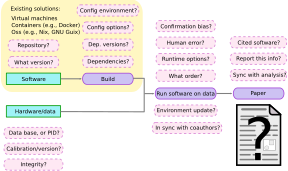
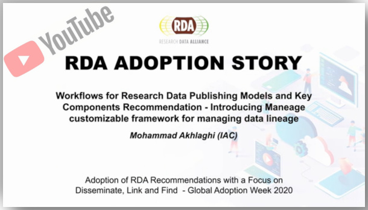

Maneage
Managing Data Lineage
Maneage is a framework for having full control over a project's data lineage (thus producing a reproducible result). Maneage is a recipient of the RDA Europe Adoption grant and was featured in a Nature Astronomy "News and Views" article (Kuttel 2021, free-to-read link). To learn more about its founding criteria and a basic introduction, see Akhlaghi et al. (2021), published in CiSE (Gold Open Access), also available in arXiv:2006.03018 (with extended appendix in one PDF). You can also watch the short talk linked below or see this published RDA Adoption story (a short PDF).
Short video introduction to Maneage:
By clicking on the image below, you will be taken to the YouTube (in a new tab) to see an invited talk at RDA Adoption week 2020 to introduce Maneage (20 minutes), the slides are also available. For a more detailed talk (1 hour), see this invited lecture at CiTIUS.
Start building your project in Maneage
To start a new project, simply run these commands to clone it from its Git repository.
git clone https://git.maneage.org/project.git # Clone Maneage, default branch `maneage'.
mv project my-project && cd my-project # Set custom name and enter directory.
git remote rename origin origin-maneage # Rename remote server to use `origin' later.
git checkout -b master # Make new `master' branch, start customizing.You are now ready to configure and make the raw template with the commands below. If they are successful, you can start customizing it.
./project configure # Build all necessary software from source.
./project make # Do the analysis (download data, run software on data, build PDF).See the Customization Checklist in the cloned README-hacking.md file for the next steps to start customizing Maneage for your project.
Submitting bugs and suggesting new features
Development discussions (like list of existing bugs and tasks) are currently maintained in GNU Savannah. You can register in GNU Savannah to submit a bug or submit a task, or comment on an existing bug or task. If you want to submit a general issue without registering on Savannah, you can submit an item.
Merge/Pull requests
As you continue customizing Maneage for your own project, you will notice generic improvements that can be useful for other projects too. In such cases, please send us those changes to implement in the core Maneage branch and let them propagate to all projects using it. If you look through the history of the Maneage branch, you'll notice many users have already started doing this, and this is how Maneage is planned to grow. The recommended process is very similar to this forking tutorial. Here is a summary:
- Go to the
maneagebranch and create a new branch from there like below:git checkout maneage git branch -b my-fix - Commit your fix over this new branch.
- Build a new project on your favorite Git repository (GitLab, BitBucket, or GitHub for example) and assign it to a new Git remote in your project.
Let's call it
my-remote. You only need to do this once and keep this for future fixes. - Push your branch to that remote:
git push my-remote my-fix - Submit a link to your fork and the corresponding branch on Savannah. If you are registered on Savannah, you can also submit it as a bug or a task.